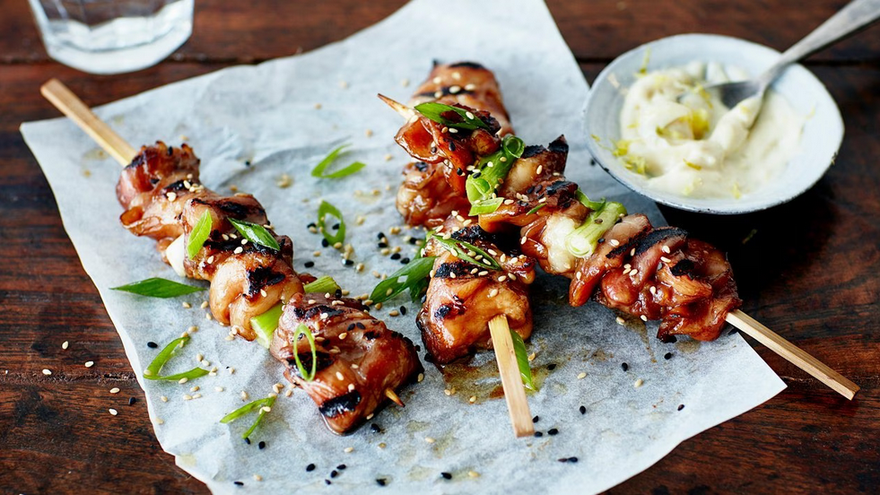

negima

Skewers of chicken and green onion.
ingredients
- 500g boneless chicken thighs,
- 6 green onions,
- 1/2 cup soy sauce,
- 1/2 cup mirin,
- 2 tbsp sugar,
- bamboo skewers.
instructions
- Cut the chicken into bite-sized pieces.
- Cut the green onions into 1-2 inch pieces.
- Skewer the chicken and green onions, alternating between them.
- Mix the soy sauce, mirin, and sugar together to make the sauce.
- Grill the skewers, brushing with the sauce frequently, until the chicken is cooked through.